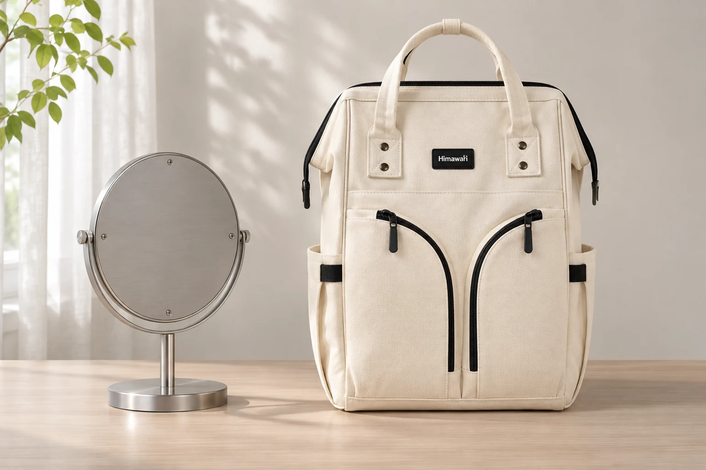
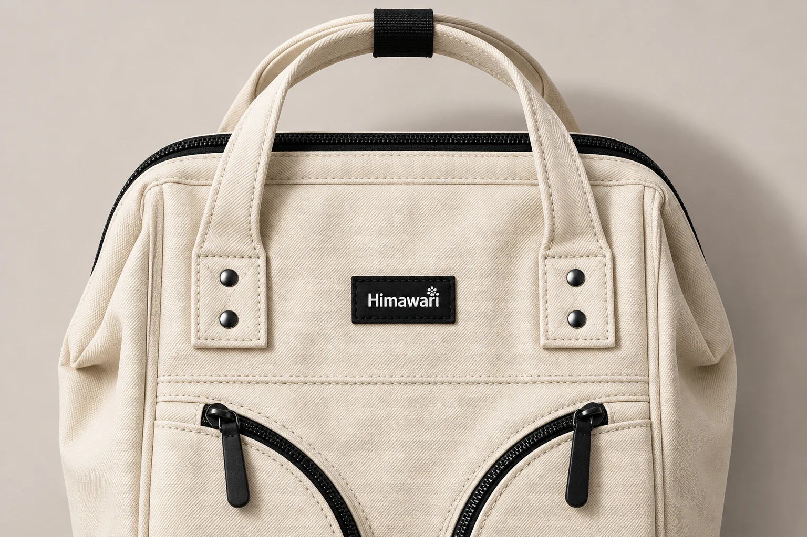
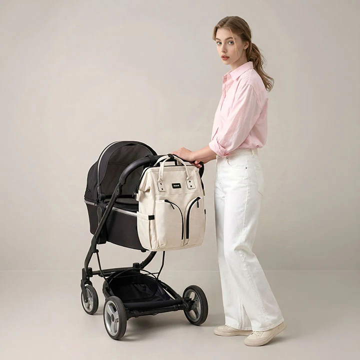

사진에서 백팩 포켓의 좌우가 바뀌어 보일 때

마음에 든 백팩의 상품 사진을 저장해 두었는데 다른 사진에서는 옆주머니가 반대편에 보입니다. 같은 모델인지 헷갈릴 수 있습니다. 촬영 방향이 달라진 것인지, 이미지가 좌우로 뒤집힌 것인지부터 구분하면 포켓 위치를 잘못 이해하는 일을 줄일 수 있습니다. 왼쪽과 오른쪽이라는 말에 앞서 가방의 어느 면을 보고 있는지 맞추는 과정입니다.
No.1208 아이보리의 공개 원본에는 위쪽 손잡이와 작은 검은 직사각형 로고, 앞면의 두 검은 곡선 지퍼가 보입니다. 이 글에서는 이 특징을 사진의 방향을 비교하는 기준으로 사용합니다. 실제 원본 사진과 글을 위해 만든 AI 연출 사진은 캡션으로 구별합니다. AI 장면에서 보이는 옆면을 제품에 새로운 주머니가 있다는 근거로 쓰지는 않습니다.
먼저 앞면을 같은 쪽으로 맞춥니다
정면 사진과 사선 사진을 바로 나란히 놓으면 가까운 쪽 포켓만 크게 보이기 쉽습니다. No.1208처럼 가방 앞면의 지퍼 선이 눈에 잘 띄면 그 선이 있는 면을 앞쪽 기준으로 정해 볼 수 있습니다. 두 사진 모두 앞면을 보고 있는지 살핀 다음 손잡이와 로고의 위치를 연결해 보세요. 가방이 돌아서 등판을 보여 주고 있다면 화면 속 좌우를 곧바로 비교할 수 없습니다.
몸에 멘 사진에서는 보는 사람의 왼쪽과 착용자의 왼쪽도 다릅니다. 가방을 정면에서 마주 보는지, 등을 보고 있는지에 따라 같은 옆면이 화면의 반대쪽에 나타날 수 있습니다. 사진을 손으로 돌려 보며 판단하기보다 앞면의 로고 쪽, 등판 쪽처럼 부위 이름을 붙이면 방향을 설명하기 쉽습니다. 사람의 얼굴이 향한 쪽만으로 가방의 방향을 정하지 않습니다.
한쪽 옆주머니가 사진 밖에 잘렸을 때는 보이는 쪽만 기록합니다. 원래 양쪽에 같은 주머니가 있는지, 반대쪽에는 다른 구조가 있는지는 별도 자료가 필요합니다. 앞면이 거의 대칭으로 보이는 가방이라도 안쪽이나 옆쪽까지 대칭이라고 가정하지 않으면 확인할 질문이 남습니다. 이 단계에서 사진의 빈 부분을 상상해 채우지 않는 편이 정확합니다.

글자가 뒤집혀 있는지 봅니다
이미지가 좌우로 반전되면 로고의 글자 방향도 함께 바뀝니다. 읽을 수 있는 로고가 있다면 방향을 판단하는 단서로 사용할 수 있습니다. 다만 로고가 작거나 흐릿하면 억지로 확대해 결론을 내리지 않습니다. 원본 해상도가 낮은 사진은 크게 보아도 새로운 세부 정보가 생기지 않습니다. 글자가 또렷한 다른 원본과 함께 비교해 보세요.
No.1208 원본의 작은 검은 로고는 손잡이 아래 앞면에 있습니다. 앞면의 두 지퍼처럼 서로 비슷한 형태만으로 반전을 가리기는 어렵습니다. 가방이 대체로 대칭이면 사진을 뒤집어도 익숙하게 보이기 때문입니다. 이럴 때 로고나 제품과 함께 촬영된 읽을 수 있는 글자가 보조 단서가 될 수 있습니다. 다만 배경 글자만으로 모델이나 판매 옵션이 같다고 확정하지는 않습니다.
개인 휴대전화로 찍은 사진도 저장 방식이나 편집 과정에 따라 방향이 달라질 수 있습니다. 특정 촬영 모드가 언제나 사진을 반전한다고 단정할 필요는 없습니다. 공유할 파일을 실제로 열어 원본과 나란히 확인하면 됩니다. 가방 앞의 글자가 읽히는 방향을 남겨 두면 나중에 포켓 위치를 문의할 때 설명이 쉬워집니다.
반전과 다른 옵션을 한 번에 판단하지 않습니다
로고 글자의 방향은 같은데 지퍼 손잡이의 위치만 달라졌다면 사진을 찍기 전에 슬라이더를 옮겼을 가능성도 있습니다. 닫힌 위치를 바꿀 수 있는 지퍼인지 확인하지 않은 상태에서 포켓 자체의 위치가 바뀌었다고 보지는 않습니다. 주머니가 이어지는 봉제선과 입구의 시작·끝처럼 움직이지 않는 부분을 기준으로 비교합니다.
색상이 다르거나 손잡이 연결 모양이 다른 사진이라면 좌우 반전만으로 설명하려고 하지 않습니다. 같은 제품 페이지에 다른 옵션이나 크기의 사진이 섞여 있을 수도 있으므로 선택한 모델과 옵션명을 함께 봅니다. 차이를 발견하면 어떤 부분이 다른지 적을 수 있지만 그 이유가 생산 시기 때문인지 디자인 변경 때문인지는 판매자의 확인이 필요합니다.
문의할 때는 비교한 두 사진과 각 사진이 있는 주소를 같이 남겨 보세요. 화면을 캡처하면서 옆면을 잘라냈다면 원래 사진도 확보합니다. '왼쪽이 이상해요'보다 '앞 로고를 마주 보았을 때 화면 오른쪽 옆주머니가 두 사진에서 달라 보여요'라고 적으면 비교할 자리가 분명합니다. 촬영 각도와 옵션 중 무엇을 확인하고 싶은지도 덧붙일 수 있습니다.

포켓 위치를 고른다면 실제 동작도 확인합니다
사진의 방향을 맞췄다고 원하는 손으로 물건을 꺼내기 편한지까지 확인한 것은 아닙니다. 예를 들어 한쪽 손으로 자주 여는 포켓을 고르는 사람이라면 가방을 등에 멘 상태로 꺼낼지, 앞으로 돌려 놓고 열지도 함께 생각합니다. 화면에서 오른쪽에 있다는 정보는 그 동작의 일부만 설명합니다. 가능한 사용법은 제품 안내와 실물에서 확인합니다.
No.1208의 외부 크기는 29 × 40 × 17 cm로 안내됩니다. 이 수치는 촬영 방향을 맞출 때의 제품 식별 정보로 쓸 수 있지만 옆주머니의 폭이나 손이 닿는 거리를 알려 주지는 않습니다. 사진을 확대해 포켓 크기를 환산하거나 착용자의 신체를 자처럼 사용해 치수를 만들지 않습니다. 필요한 부위의 실제 치수를 별도로 확인하는 편이 낫습니다.
비교를 마친 사진은 화면 좌우 대신 앞면과 등판을 기준으로 짧게 표시해 두면 다시 보기 좋습니다. 방향이 확실하지 않은 사진은 그대로 미확인으로 남겨도 됩니다. 포켓 위치가 구매 조건이라면 로고가 읽히는 정면 사진과 원하는 옆면 사진을 요청하세요. 한 장의 뒤집힌 이미지 때문에 가방의 구조까지 다르게 기억하지 않도록 확인한 부위부터 연결하면 됩니다.